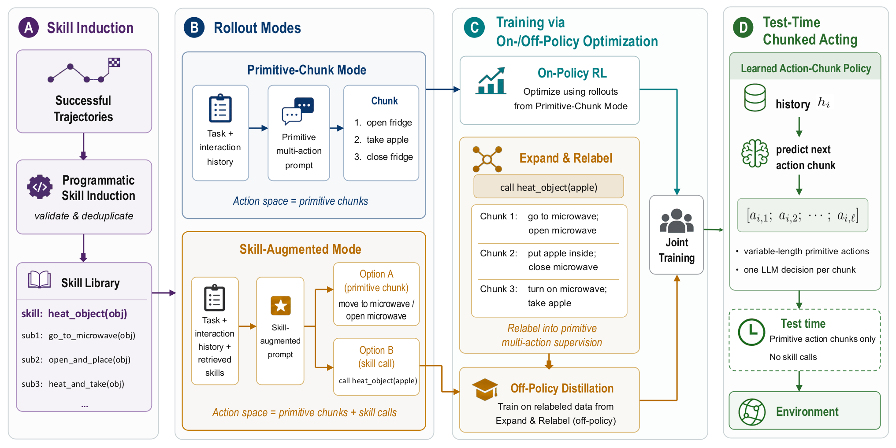
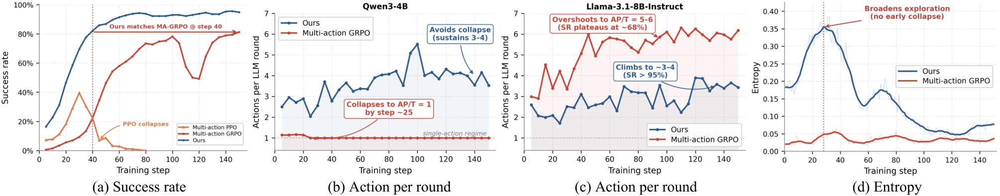

SPACE: Skill-Guided Adaptive Action Chunking for Long-Horizon LLM Agents
TL;DR
- "Act More, Decide Less" (arXiv 2609.02042; Yanting Yang, Can Jin, et al., Rutgers + collaborators) attacks the ReAct tax: one LLM call per primitive action means most calls on long-horizon tasks re-decide routine sequences. The fix is a policy that emits variable-length action chunks — but naive multi-action RL fails in two symmetric ways: collapse to single actions (Qwen3-4B) or over-commitment to 5–6-action chunks with worse success (Llama-3.1-8B).
- The diagnosis is that sparse terminal rewards carry no signal about where chunks should end. SPACE supplies that signal from data the agent already has: it induces two-level programmatic skills (composite → subskills) from successful trajectories, and uses subskill boundaries as direct chunk-boundary supervision, distilled into a skill-free policy via hybrid on-/off-policy training with chunk-aware credit assignment.
- On ALFWorld, SPACE hits 99.2/96.9% success (seen/unseen, Qwen3-4B) at 3.7–4.4 LLM rounds per episode vs 15.9–21.7 for GiGPO — +14–15.6 points success with up to 78.9% fewer decision rounds; on ScienceWorld it nearly doubles the strongest baseline (+27.3 to +31.3).
Why this matters
Decision frequency is the hidden cost center of every agent: each LLM round pays full-context prefill, and for a mature policy most rounds are foregone conclusions ("open fridge → take apple → close fridge"). Robotics solved this long ago with temporally extended actions (options, action chunking), but LLM-agent RL has stayed stubbornly one-action-per-round because nothing in RLVR tells the policy where a chunk boundary belongs — the paper shows standard GRPO/PPO given a multi-action interface either degenerates back to ReAct or overshoots into open-loop execution that misses observations.
The interesting move for this tracker is what supervises the boundaries: programmatic skills induced from the agent's own successes, used purely as a training-time scaffold and discarded at deployment. That is a genuinely different role for skill libraries than the retrieval-time role in Google's skill library or MSCE — here skills are a supervision format, a way to convert trajectories into labeled temporal structure. It's distillation of structure rather than content, and it composes with any of the skill-accumulation work already tracked.
The core idea
Chunked acting keeps the POMDP and terminal reward unchanged but makes the policy semi-Markov: at decision round \(i\) with history \(h_i\), the policy emits a chunk \(u_i=(a_{i,1},\dots,a_{i,\ell_i})\) of up to \(L\) primitive actions, executed open-loop until done or an invalid action interrupts. The question is where \(\ell_i\) should end.
SPACE's answer: successful behavior already decomposes into reusable routines. It maintains a two-level skill library \(B=B^C\cup B^S\): a subskill \(b^S=\langle d^S,\xi^S,f^S\rangle\) (description, argument schema, function) emits exactly one action chunk when invoked; a composite skill \(b^C=\langle d^C,\xi^C,f^C,c\rangle\) is a task-pattern program whose body is an ordered sequence of subskill calls \(c=(c_1,\dots,c_M)\). Subskill boundaries inside a composite skill are the chunk boundaries. Skills are induced by prompting the model to segment its own successful trajectories, then filtered by static checks (syntax, compilability, signature consistency) and AST-level deduplication.
Training alternates two rollout modes: a fraction \(\rho_{prim}\) of rollouts use the deployment interface (primitive-chunk mode, → on-policy set \(D_{on}\)); the rest use skill-augmented mode, where the policy may emit a chunk or call a retrieved skill. Skill calls are then compiled away by skill-to-chunk expansion — a composite call unrolls into its subskill sequence, each yielding one (history, chunk) pair with an inherited boundary — producing the off-policy set \(D_{off}\) in the same format the deployed policy uses.

Figure 2 from the paper: (A) programmatic skills induced from successful trajectories; (B) primitive-chunk vs skill-augmented rollout modes; (C) expand-and-relabel converts skill calls into chunk-level supervision for joint on-/off-policy training; (D) at test time the policy emits variable-length chunks with no skill-library access.How it works
Chunk-aware two-level advantages. Following GiGPO, a trajectory-level advantage is combined with anchor-grouped step credit. For a rollout group \(G\) sharing task and initial condition:
where \(r(\tau)\) is terminal reward, \(M_\tau\) the number of LLM rounds, and \(\gamma_c\) a round-level discount. The return \(G_{\tau,i}\) is broadcast to every action in chunk \(u_i\), then normalized within the set \(H(z)\) of action occurrences sharing the same anchor observation \(z_{\tau,i,j}\) (the observation immediately before action \(a_{\tau,i,j}\)):
Two losses, one advantage. On-policy data gets a standard clipped objective over per-action ratios \(\rho_{\tau,i,j}(\theta)=\pi_\theta(a_{\tau,i,j}\mid h_i,a_{\tau,i,<j})/\pi_{\theta_{old}}(\cdot)\); expanded skill trajectories get a self-imitation-style weighted log-likelihood:
The off-policy term is where chunk boundaries get distilled: only positive-advantage expanded chunks are imitated, and their boundaries come from the programmatic subskill structure rather than from the terminal reward.
Algorithm: SPACE training loop
Input: policy pi_theta, env tasks, skill library B (initially empty)
for each training step:
sample 16 tasks, rollout group of 8 per task
for each rollout:
with prob rho_prim: # primitive-chunk mode (deployment interface)
emit chunks u_i ~ pi_theta(.|h_i) -> D_on
else: # skill-augmented mode
y_i ~ pi_theta(.|h_i, retrieved skills B_i) # chunk OR skill call
Expand(h_i, y_i): unroll composite -> subskill chunks
subskill call -> one chunk -> D_off
from successful trajectories: induce composite+subskills,
static-check (syntax/compile/signature), AST-dedupe -> update B
compute A_traj (group-normalized) and A_step (anchor-grouped, gamma_c)
update theta on L_on(D_on, clipped) + lambda_off * L_off(D_off, SIL)
Deployment: primitive chunks only; no skill library, no retrieval
Setup details: Qwen3-4B and Llama-3.1-8B-Instruct backbones, no-thinking mode, history length 5, max chunk length 6, \(\rho_{prim}=0.5\) (ALFWorld) / 0.75 (ScienceWorld), lr 1e-6.
Results
On ALFWorld (Table 1), against prompting (zero-shot/ReAct/Reflexion) and RL baselines (RLOO, GRPO, GiGPO, multi-action GRPO), SPACE is best on every split and backbone on both axes simultaneously:
- Qwen3-4B unseen: 96.9% SR at 4.4 rounds, vs GiGPO 72.7% at 21.7 rounds and multi-action GRPO 81.3% at 20.9 — +15.6 points while cutting rounds ~5×.
- Llama-3.1-8B unseen: 94.5% at 5.2 rounds vs GiGPO 83.6% at 18.8.
- ScienceWorld: +27.3 to +31.3 over the strongest baseline at roughly half the rounds (near-doubling of success).
The failure-mode analysis is the part worth internalizing (Figure 3): with a multi-action interface but no boundary supervision, Qwen collapses to ~1 action/round by step ~25 (single-action regime), while Llama overshoots to 5–6 actions/round with success plateauing at ~68%. SPACE sustains a non-degenerate 3–4 actions/round with SR >95%, converges to multi-action-GRPO's final performance by step 40, and keeps higher policy entropy early (broader exploration, no premature collapse). Rollout efficiency: matching GRPO's final ALFWorld performance takes SPACE only 43.6K rollout rounds.

Figure 3 from the paper: (a) SPACE reaches multi-action GRPO's final success by step 40 while PPO collapses; (b, c) the two naive failure modes — Qwen collapses to 1 action/round, Llama overshoots to 5–6 — vs SPACE's stable 3–4; (d) higher early entropy, no early collapse.Ablations confirm both ingredients are necessary (dropping either the skill-derived off-policy supervision or chunk-aware credit hurts), and learned chunks improve test-time scaling via chunk-level best-of-N.
How it connects
- GiGPO (tracked): SPACE inherits its two-level anchor-grouped advantage and shows what it buys once the action space is temporally extended — chunk-aware broadcast of \(G_{\tau,i}\) is the credit-assignment piece that makes variable-length chunks trainable.
- SP3O and turn-level trace rewards attack the same granularity problem from the reward side (segment preferences, per-turn rewards); SPACE attacks it from the action-space side and gets efficiency, not just learning signal, out of the coarser granularity.
- MSCE and the long-horizon skill library accumulate skills to use at inference; SPACE inverts this — skills exist only to label temporal structure and are compiled away, so deployment needs no retrieval, no library maintenance, no skill-selection failure modes (cf. SkillGate).
- Automata from agent traces is the closest structural relative: both induce programmatic structure from trajectories; SPACE is what you get when that structure is fed back as RL supervision rather than used for analysis.
Critical take
The environments are the weak point: ALFWorld and ScienceWorld are templated text worlds with small, discrete action vocabularies where "routine subsequence" is unusually well-defined; in coding or browser agents, chunk boundaries are fuzzier and mid-chunk observations matter more, so the open-loop risk that sank the Llama baseline could bite SPACE too (the max chunk length of 6 and interrupt-on-invalid-action are doing real safety work here). Skill induction is self-supervised by the same model with only static checks — no execution-level validation of induced skills is described, so noisy segmentation flows straight into supervision (inferred from the thread and method text — verify in the paper's appendix). The comparison to GiGPO conflates two changes (chunked action space + skill supervision); multi-action GRPO isolates the first, but a "GiGPO + chunked actions" cell would have been the cleanest ablation. And success-per-round gains partially are the point of chunking, so the 78.9% round reduction should be read as the deliverable, not as a bonus. Still, the two-failure-mode diagnosis (collapse vs over-commitment, both from unlearnable boundaries) is crisp, reproducible, and the kind of insight that transfers even if the exact recipe doesn't.
If you remember three things
- Multi-action RL without boundary supervision fails predictably in one of two ways — collapse to single actions or over-commitment to too-long chunks — because sparse terminal rewards say nothing about where a chunk should end.
- Subskill boundaries inside programmatic skills induced from successful trajectories are free chunk-boundary labels; expand skill calls into chunks, imitate the positive-advantage ones (SIL with \(w=\mathrm{clip}(A,0,w_{max})\)), and the deployed policy needs no skill library at all.
- The payoff is on both axes at once: ~97% ALFWorld unseen success at ~4 LLM rounds/episode — versus ~73% at ~22 rounds for GiGPO — i.e., better agents that are also ~5× cheaper per episode.